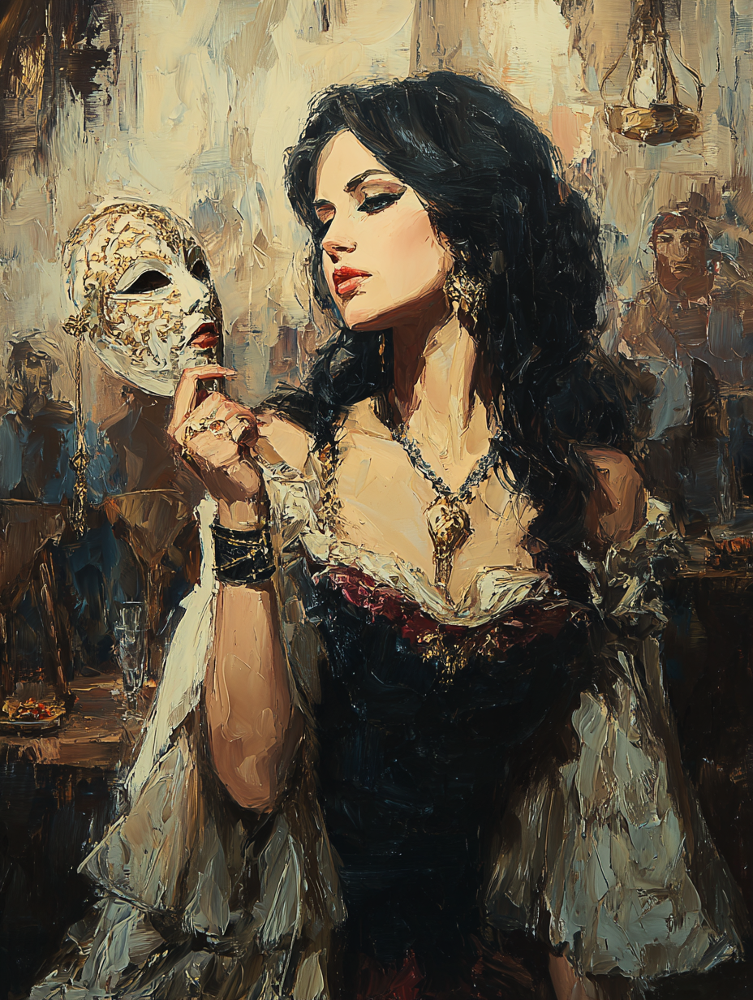

Damla "The Faceless" Sancaktar
Shadow-Player of Pera · College of the Shadowactor

Armenian · Aged Twenty-Six
On the Subject
Damla's performances blur the lines between art and espionage. By night she works the grand theaters of Pera and Beyoğlu, casting shadow-puppet plays that draw audiences from the ambassadors' quarter and the Sublime Porte alike. By the same night, she listens.
The shadow-art the audience watches is not always the only one she is practicing — sometimes the shapes on the canvas are answering questions no one in the room can see her ask. She is young, gifted, and not yet famous; "The Faceless" is a stage name and an alias, and both are still being written.
Faculties & Saving Throws
Base array 12, 12, 11, 10, 10, 8; Human +1 to each; Actor feat +1 Cha
Bearing in the Field
Skills
Expertise applied to Deception and Performance — her two faces
| Skill | Bonus | Source |
|---|---|---|
| Deception | +6 | Charlatan · Expertise |
| Investigation | +2 | Bard |
| Performance | +6 | Human · Expertise |
| Persuasion | +4 | Bard |
| Sleight of Hand | +3 | Charlatan |
| Stealth | +3 | Bard |
Class Features
Grant an ally within 60 ft. a d6; ally adds the die to one ability check, attack roll, or saving throw within 10 minutes.
Adds +1 (half PB) to any ability check that doesn't already include proficiency.
During a short rest, allies who spend a Hit Die regain an extra d6 HP.
Proficiency doubled on Deception and Performance.
A lantern, candle, or torch may serve as her spellcasting focus. As a bonus action, she creates Azlaz-saha — an Area of Shadows 30 ft. radius of dim light centered on her, lasting 1 minute (bonus action to end early). Within it:
- She sees this area as if it were bright light. Not affected by darkness or daylight.
- She can shape the shadows freely with hand movements (no action required).
Melee spell attack. On hit, target makes a Strength save vs DC 12 or is grappled by shadow. While grappled, the creature is restrained and attacks have advantage against it. Target may attempt escape vs DC 12 on its turn. By expending a 1st-level or higher spell slot as a bonus action, she may use this ability again.
Spells
6 spells known at Bard 3
- Vicious Mockery
- Minor Illusion
| Lvl | Spell | Notes |
|---|---|---|
| 1st | disguise self | 1 hour illusion of altered appearance — espionage core |
| 1st | charm person | Cha-flavored manipulation |
| 1st | silent image | 15-ft cube illusion; concentration up to 10 min |
| 2nd | silence | 20-ft sphere of magical silence; anti-caster |
| 2nd | invisibility | Touch; 1 hr or until attack/cast |
| 2nd | suggestion | Concentration; single creature; Wis save vs DC 12 |
Feat
Advantage on Deception and Performance checks when trying to pass herself off as someone else. Can mimic a person's speech or a creature's sounds she has heard; a listener can spot the mimicry only with a contested Insight check versus her Deception.
Background — Charlatan
Damla maintains a second persona, complete with documentation, established acquaintances, and a backstory that holds up under casual scrutiny. She can also forge documents — letters, official orders, identifications — provided she has the materials and time.
She cultivates wealthy admirers among her theater patrons — letting them buy her gifts, dinners, and rooms at the better hotels, never explicitly promising anything but leaving the door open just enough to keep them paying. The favor she actually offers in return is the implication of a future companionship. She has never delivered on it. She has rarely even been called on it; her admirers are usually too proud to make the demand outright.
Equipment
- Rapier — 1d8 piercing, finesse; +3 to hit / 1d8+1; a stage rapier sharpened for real use, taken from a theater company's prop room
- Hanchar × 2 — dagger stats: 1d4 piercing, finesse, light, thrown 20/60; +3 to hit / 1d4+1; one tucked in a boot, one up the sleeve
- Leather armour — worn as a light leather jacket over her clothes — typical Istanbul streetwear; AC 11 + Dex; total AC 13
- Disguise kit — Charlatan
- Forgery kit — Charlatan
- Lute — Bard instrument; arcane focus alternative
- Theater lantern — small, with shutter and tinted glass; her primary Shadowactor focus
- Candles × 5, portable torch — backup foci
- Costume trunk — three changes of clothes (fine, common, traveler's); two wigs; cosmetics
- Set of weighted dice — loaded; Charlatan
- Sealing wax and three signet rings — of false noble houses; Charlatan
- Diplomat's pouch — small souvenirs from past audiences: a baron's button, an attaché's monogrammed handkerchief, a calling card she shouldn't have
- Theater workshop in Pera — full shadow-puppet apparatus, screens, and stage lighting
Personality
I have three smiles: the one for the stage, the one for the mark, and the one I keep for myself. I do not always remember which is which.
I belong to no patron, no embassy, no cause. I sell the performance, not the performer.
Someone once paid me to play a part that ended badly for the man I was deceiving. I have not taken that kind of job since — but I keep the coin, to remind myself.
I cannot resist a stage. Even when slipping away would be smarter, I will linger for the applause.
Connections
- Performed in Constantinople's theater district, where she befriended Ayla Sürgün.
- Helped Selim the Bound disguise himself during a dangerous mission.
Her espionage skills and ability to misdirect attention are useful in navigating political intrigue.